Superadmin · Project Admin · BOQ / Cost Control · Approver · Finance · Project / Site
21 Oktober 2026
Cara memakai buku ini
Buku ini menjelaskan cara memakai aplikasi PM Cost Control: menyusun biaya project (BOQ), menyetujuinya, mencatat pembayaran dan progress, lalu menagih ke klien. Setiap peran hanya melihat menu dan tombol yang menjadi haknya.
Bab 1–15 menjelaskan cara kerja tiap bagian, lengkap dengan siapa yang boleh melakukannya. Bab 16 merangkum tugas harian masing-masing peran. Jika sebuah tombol tidak muncul di layar Anda, peran Anda memang tidak memiliki akses itu — bukan karena halaman rusak.
Tangkapan layar diambil dari data contoh yang ada di aplikasi. Nama project, angka, dan tanggal di komputer Anda bisa berbeda.
Akun dan kata sandi diberikan oleh Superadmin. Jangan meminjamkan akun, karena setiap perubahan tercatat atas nama pengguna yang masuk.
Daftar isi
1. Gambaran aplikasi
2. Masuk dan profil
3. Menu dan enam peran
4. Project
5. BOQ dan COGS
6. Approval dan revisi BOQ
7. Payment
8. Progress
9. Pengadaan, BMHP, dan sewa alat
10. Penagihan ke klien
11. Dokumen
12. Asset
13. Man Power
14. Laporan
15. Pengguna
16. Panduan per peran
17. Arti status
18. Hal yang sering ditanyakan
1. Gambaran aplikasi
Alur utama sebuah project:
Project dibuat dan diaktifkan.
BOQ disusun (kelompok biaya / COGS dan item pekerjaan), lalu diajukan.
Approver menyetujui BOQ, atau mengembalikannya untuk diperbaiki.
Payment merencanakan dan mencatat uang yang keluar untuk pekerjaan.
Progress mencatat sejauh mana item pekerjaan sudah selesai.
Penagihan menagih klien berdasarkan termin. Ini pemasukan, terpisah dari Payment.
Di samping alur itu ada pengadaan (BMHP, aset, sewa alat), dokumen project, asset yang dipakai di lapangan, dan man power (upah serta kasbon). Asset tidak masuk ke perhitungan biaya project. Upah man power yang sudah dibayar masuk ke biaya aktual project.
Kotak Next Action di halaman project memberi tahu langkah yang paling masuk akal berikutnya, misalnya “Update progress item pekerjaan”.
2. Masuk dan profil
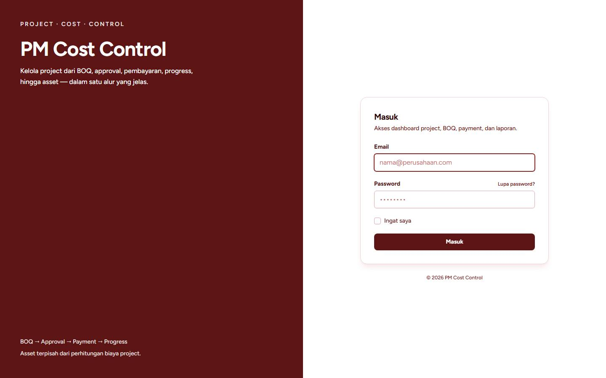
Halaman masuk. Isi email dan password, lalu klik Masuk.
Buka alamat aplikasi di peramban.
Isi Email dan Password.
Centang Ingat saya hanya di komputer pribadi.
Klik Masuk.
Jika lupa kata sandi, klik Lupa password?, isi email, lalu ikuti tautan yang dikirim ke email tersebut.
Untuk keluar, klik Logout di kanan atas. Nama dan peran Anda tampil di bawah tombol itu, dan juga di bawah menu samping.
Untuk mengubah nama, email, atau kata sandi: klik nama Anda lalu buka halaman profil. Kata sandi baru harus diketik dua kali dan dikonfirmasi dengan kata sandi yang sedang dipakai.
3. Menu dan enam peran
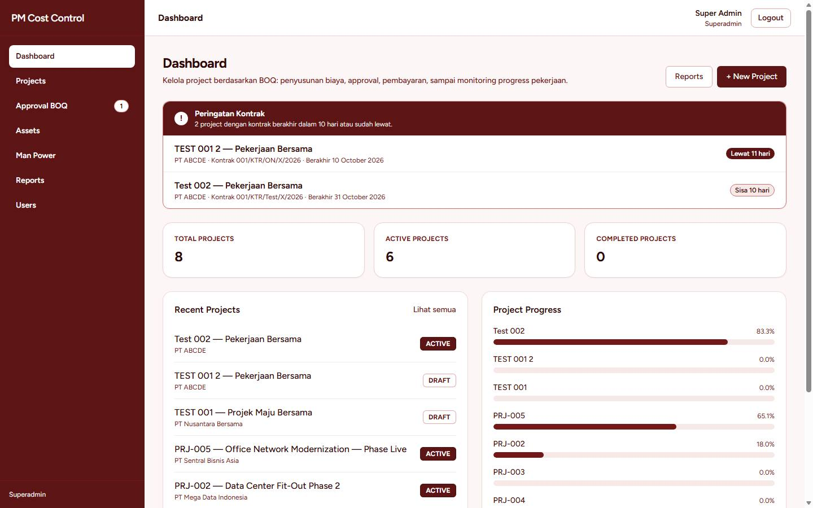
Dashboard. Menu kiri berubah sesuai peran. Angka pada Approval BOQ adalah jumlah BOQ yang menunggu keputusan.
Dashboard menampilkan peringatan kontrak yang akan atau sudah berakhir, jumlah project, project terbaru, dan batang progress. Tombol + New Project hanya muncul bagi yang berhak membuat project. Reports membuka laporan global.
Menu
Siapa yang melihat
Dashboard, Projects
Semua peran
Approval BOQ
Superadmin, Approver
Assets
Semua peran (mengubah data master: Superadmin dan Project Admin)
Man Power
Semua peran kecuali Project / Site
Reports
Semua peran
Users
Superadmin
Di dalam sebuah project ada tab. Tab yang tidak menjadi hak Anda tidak ditampilkan.
Tab
Isi singkat
Tidak tampil untuk
Overview
Identitas project, ringkasan, dan langkah berikutnya
—
BOQ
Daftar biaya
—
Assets
Asset yang dipakai project ini
—
Man Power
Tenaga kerja, hari kerja, kasbon
Project / Site
Pengadaan, BMHP, Sewa Alat
Permintaan barang, bahan, dan sewa
—
Penagihan
Termin dan tagihan ke klien
Project / Site
Dokumen
Dokumen project dan status review
Project / Site
Payment
Rencana dan pembayaran keluar
—
Progress
Persen selesai tiap item
—
Laporan
Laporan project ini
—
4. Project
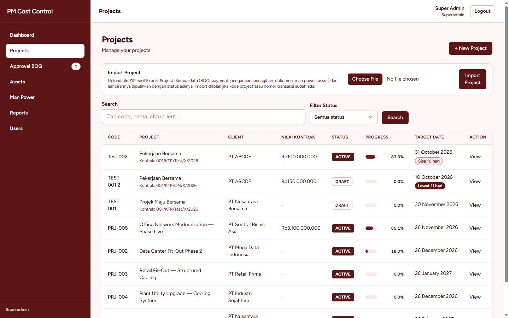
Daftar project. Superadmin juga melihat kartu Import Project di halaman ini.
Membuat project
Yang boleh: Superadmin dan Project Admin.
Klik + New Project.
Isi kode, nama, klien, nomor kontrak, nilai kontrak, tanggal mulai, dan target selesai.
Simpan. Project baru berstatus DRAFT.
Buka project itu, lalu klik Activate Project agar status menjadi ACTIVE. Sebagian pekerjaan (man power, penugasan asset) hanya bisa dilakukan setelah project aktif.
Nilai kontrak perlu diisi sebelum termin penagihan dibuat. Jika belum, buka Edit Project.
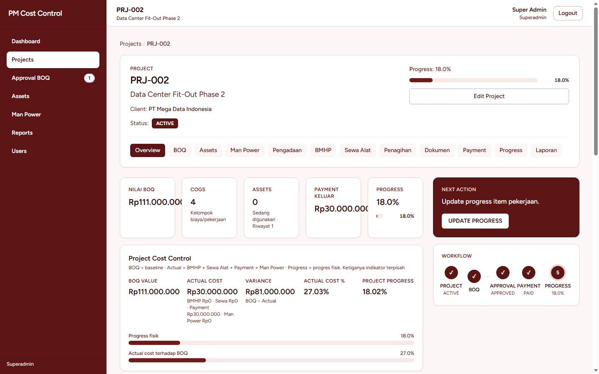
Overview project: klien, status, progress, dan tab bagian.
Export dan import project
Hanya Superadmin. Di Overview ada kartu Export Project: seluruh data project (BOQ, pembayaran, penagihan, dokumen, asset, man power) beserta lampiran diunduh sebagai satu file ZIP. Di daftar project ada Import Project untuk memasukkan file ZIP itu ke aplikasi ini. Import ditolak jika ada nomor yang sudah dipakai, dan alasannya ditampilkan sebagai daftar.
Menghapus project
Hanya Superadmin. Di bagian bawah Overview ada Hapus Project. Ketik kode project persis seperti yang diminta, lalu konfirmasi. Project yang sudah dihapus tidak tampil di daftar.
5. BOQ dan COGS
BOQ adalah daftar biaya project. COGS adalah kelompok biaya. Di dalamnya ada Item Pekerjaan dengan jumlah, satuan, harga material, harga jasa, dan keterangan. Kode COGS dan kode item dibuat otomatis: COGS-001, ITEM-001, ITEM-002, dan seterusnya. Nomor item dihitung ulang di tiap COGS.
Yang boleh menyusun dan mengajukan BOQ: Superadmin, Project Admin, dan BOQ / Cost Control. Perubahan hanya bisa dilakukan saat BOQ berstatus DRAFT atau sedang diperbaiki setelah revisi.
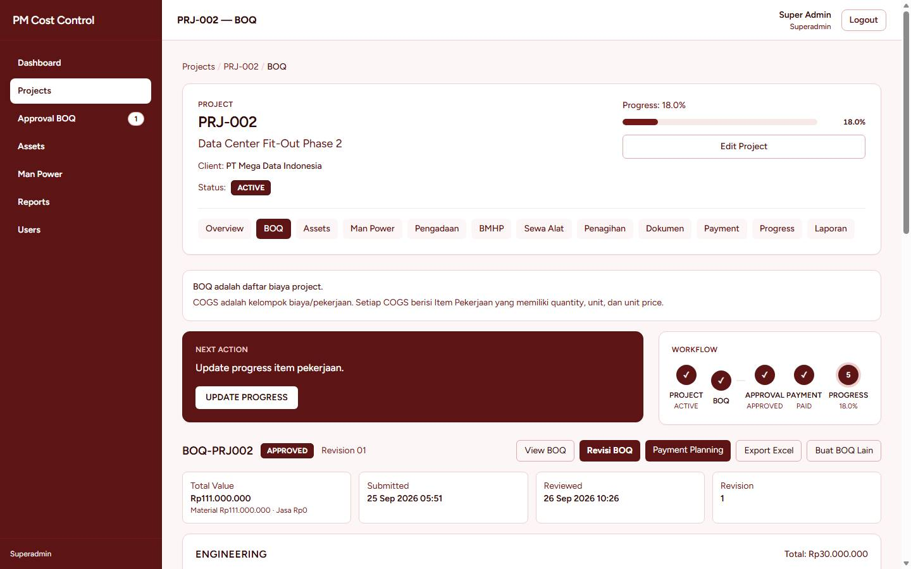
Tab BOQ pada project yang sudah disetujui. Tombol Revisi BOQ, Payment Planning, dan Export Excel.
Menyusun BOQ dari formulir
Buka tab BOQ, klik Buat BOQ (atau Buat BOQ Lain jika sudah ada BOQ).
Isi kode BOQ dan nomor revisi. Tambah COGS, lalu isi item: nama, jumlah, satuan, harga material, harga jasa, dan keterangan. Kode item boleh dikosongkan.
Periksa total di bagian bawah, lalu simpan.
Menyusun BOQ dari Excel
Di halaman buat BOQ, klik Download Template Excel.
Isi file di Excel. Kolomnya: cogs_name, cogs_description, item_name, item_description, quantity, unit, material_price, service_price, item_notes. Tidak ada kolom kode item — kode diisi aplikasi.
Klik Import Excel/CSV dan pilih file .xlsx. Isi formulir terisi dari file itu. Periksa dulu, baru simpan.
Export Form Excel mengunduh isian formulir yang sedang terbuka, sebelum disimpan.
File CSV juga diterima. Aplikasi mengenali pemisah koma, titik koma, atau tab, serta angka seperti 3,5 atau Rp 12.500. File Excel lama berekstensi .xls ditolak; simpan ulang sebagai .xlsx.
Di halaman BOQ yang masih DRAFT, import juga bisa dilakukan langsung ke BOQ yang sudah tersimpan. Item dengan kode yang sudah ada dilewati, supaya tidak ganda. Karena itu file hasil Export Excel (yang masih memuat kode item) aman diimpor ulang.
Mengajukan BOQ
Buka BOQ, periksa item dan total.
Klik Submit BOQ.
Status berubah menjadi WAITING APPROVAL. BOQ muncul di menu Approval BOQ.
6. Approval dan revisi BOQ
Yang boleh memutuskan: Superadmin dan Approver.
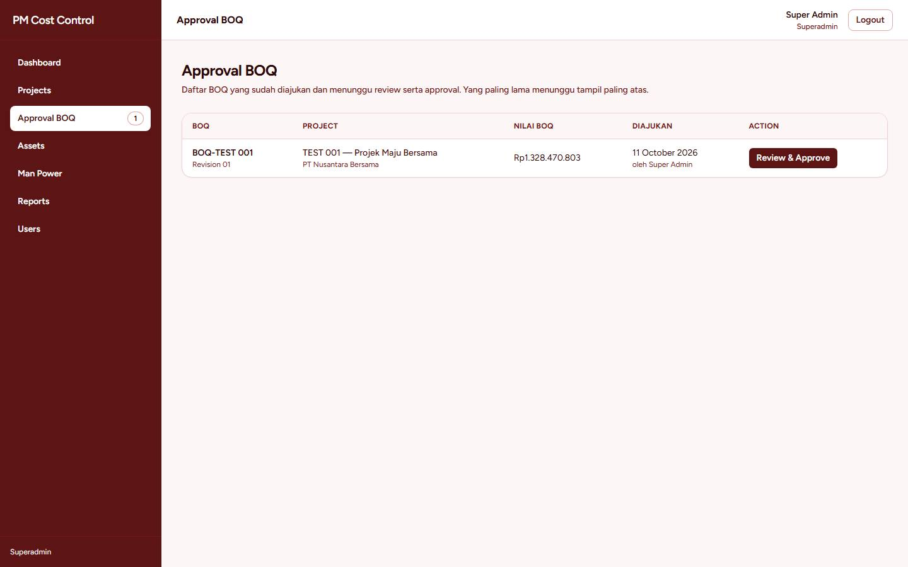
Antrian Approval BOQ. Yang paling lama menunggu tampil di atas.
Buka Approval BOQ. Angka di menu adalah jumlah yang menunggu.
Klik Review & Approve pada baris BOQ.
Periksa kelompok biaya, item, harga, dan keterangan.
Setujui jika sudah benar. Status menjadi APPROVED. Setelah ini Payment Planning dan progress bisa dilanjutkan.
Jika belum benar, minta revisi dan tulis catatan yang harus diperbaiki. Status menjadi REVISION REQUIRED.
Memperbaiki BOQ yang diminta revisi
Yang boleh mengubah dan mengajukan ulang: Superadmin, Project Admin, dan BOQ / Cost Control. Approver dapat membuka revisi, tetapi yang memperbaiki adalah tim penyusun BOQ.
Buka tab BOQ project tersebut, lalu Revisi BOQ.
Ubah item sesuai catatan. Saat revisi berlangsung, rencana pembayaran yang sudah ada tetap bisa dilihat, tetapi tidak diubah dari sini.
Klik Submit BOQ Again.
Approver meninjau ulang dari menu Approval BOQ.
7. Payment
Payment adalah uang yang keluar untuk pekerjaan, terikat ke item BOQ yang sudah APPROVED. Ini berbeda dari Penagihan (uang yang masuk dari klien).
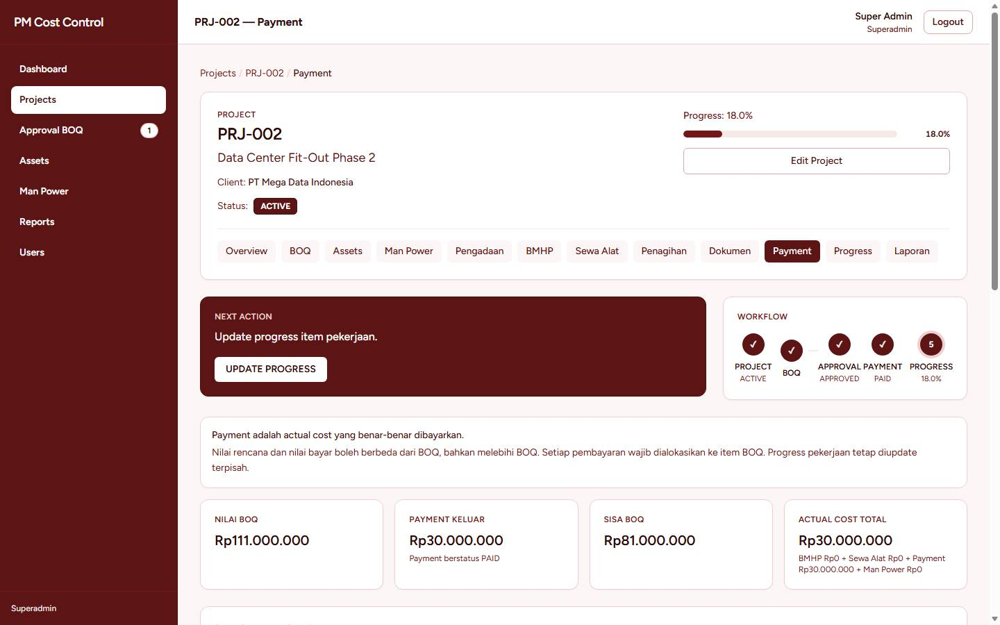
Tab Payment: rencana pembayaran dan posisi biaya aktual, termasuk man power.
Membuat dan mengubah rencana, serta memproses pembayaran: Superadmin dan Finance. Peran lain dapat melihat.
Dari tab BOQ, klik Payment Planning, atau buka tab Payment.
Buat rencana pada item yang dipilih. Pilih jenis Direncanakan (ada tanggal) atau Bisa Dibayar Langsung.
Saat rencana siap dicairkan, tandai siap bayar. Status rencana berjalan dari PLANNED ke READY TO PAY, lalu PAID.
Buka pembayaran, isi tanggal, nilai, dan bukti jika diminta, lalu simpan. Status pembayaran Paid.
Pembayaran yang salah dapat dibatalkan menjadi Void. Data tidak dihapus, supaya riwayat tetap ada.
Selama BOQ sedang direvisi, rencana yang sudah tersimpan hanya bisa dilihat.
8. Progress
Progress project dihitung dari nilai item, bukan dari rata-rata persen: Progress = Total Nilai Selesai ÷ Total BOQ × 100%. Progress bisa diperbarui setelah BOQ berstatus APPROVED, tanpa harus menunggu payment berstatus Paid.
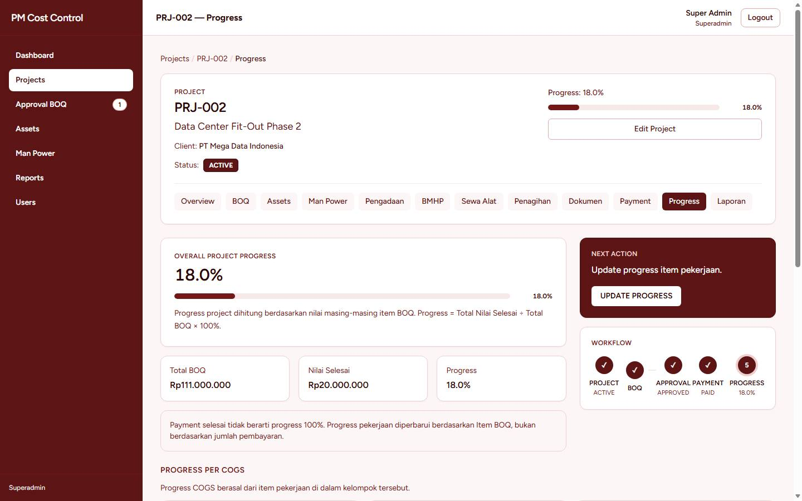
Tab Progress. Hanya Project / Site dan Superadmin yang dapat mengubah angka.
Yang boleh mengubah angka progress: Superadmin dan Project / Site. Peran lain hanya melihat.
Buka tab Progress, atau klik Update Progress pada kotak Next Action.
Isi progress item (0–100). Status item mengikuti isian: belum mulai, berjalan, atau selesai.
Simpan. Batang progress di kepala project dan di dashboard ikut berubah.
9. Pengadaan, BMHP, dan sewa alat
Tiga jenis permintaan: BMHP (bahan), Aset, dan Sewa Alat. Tab BMHP dan Sewa Alat menampilkan permintaan jenis itu beserta alokasinya ke item BOQ.
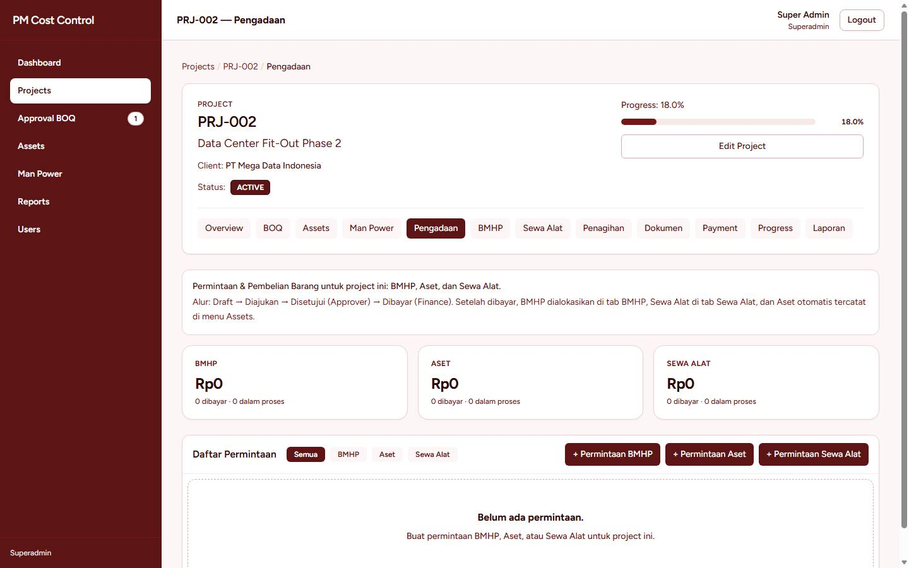
Tab Pengadaan pada sebuah project.
Langkah
Yang boleh
Membuat, mengubah, mengajukan
Superadmin, Project Admin, Project / Site
Mengalokasikan ke item BOQ
Superadmin, Project Admin, BOQ / Cost Control, Project / Site
Menyetujui
Superadmin, Approver
Membayar dan membatalkan
Superadmin, Finance
Tab Pengadaan → buat permintaan. Pilih jenis, isi item, tanggal, dan keterangan. Untuk BMHP, item bisa diimpor dari CSV lewat Download Template CSV dan Import CSV pada formulir. Periksa daftarnya sebelum menyimpan.
Simpan sebagai draft, lalu klik Ajukan. Status menjadi Diajukan.
Approver klik Setujui. Jika perlu diperbaiki, permintaan dapat dikembalikan ke draft.
Finance membayar dan dapat melampirkan bukti. Status menjadi Dibayar. Pembatalan mengubah status menjadi Dibatalkan.
Alokasi menghubungkan nilai permintaan ke item BOQ, supaya laporan biaya bisa dibandingkan dengan anggaran item tersebut.
10. Penagihan ke klien
Penagihan adalah pemasukan dari klien. Nilainya tidak mengubah BOQ, progress, BMHP, maupun Payment. Yang tidak melihat tab ini: Project / Site.
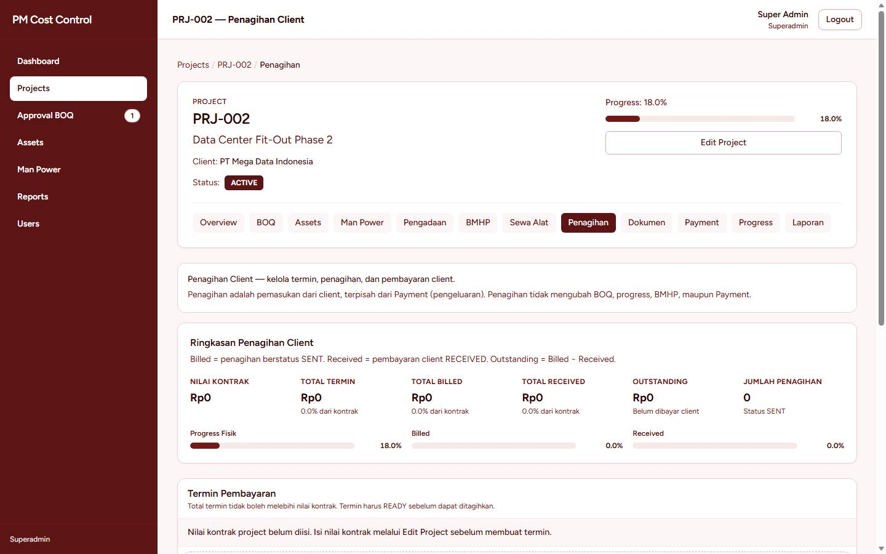
Tab Penagihan. Termin tidak bisa dibuat sebelum nilai kontrak diisi.
Menyusun termin serta membuat dan mengajukan penagihan: Superadmin, Project Admin, dan Finance. Mengirim ke klien, membatalkan, dan mencatat uang yang diterima: Superadmin dan Finance. Approver dapat melihat penagihan dan pembayaran klien.
Termin
Pastikan nilai kontrak sudah diisi lewat Edit Project. Jumlah seluruh termin tidak boleh melebihi nilai kontrak.
Buat termin. Cara hitung: Persentase dari nilai kontrak, atau Nilai Tetap.
Pemicu kesiapan: Manual, Progress Fisik, Milestone, atau Tanggal.
Termin harus berstatus Ready sebelum ditagihkan. Untuk pemicu manual, tandai siap. Untuk progress atau tanggal, aplikasi menandai siap saat syarat terpenuhi, dan memberi tahu pengguna yang mengurus penagihan.
Penagihan dan pembayaran klien
Buat penagihan dari termin yang Ready. Lampirkan dokumen bila ada.
Klik Submit. Setelah submit, isi penagihan tidak dapat diubah. Jika masih harus diperbaiki sebelum dikirim, kembalikan ke draft (selama belum dikirim).
Finance klik kirim. Status menjadi Sent. Baru setelah terkirim, nilainya dihitung sebagai tertagih.
Saat klien membayar, catat pembayaran (tanggal, nilai, bukti). Status berjalan ke Partially Paid lalu Paid. Pembayaran yang salah dibatalkan, tidak dihapus.
Penagihan yang tidak jadi dapat dibatalkan menjadi Cancelled.
11. Dokumen
Tab Dokumen menyimpan berkas project dan alur review-nya. Project / Site tidak melihat tab ini. Approver dapat melihat dan mengunduh. Mengelola dokumen (membuat, mengajukan, merevisi, menyetujui, membatalkan): Superadmin, Project Admin, dan Finance.
Buat dokumen, pilih jenisnya, dan unggah berkas. Status awal Draft.
Klik Submit ke Client bila dokumen memang dikirim ke klien. Setelah submit, berkas tidak diganti sampai ada permintaan revisi.
Review dimulai (Under Review). Peninjau dapat meminta revisi (Revision Required). Penyusun mengunggah versi baru dan mengajukan ulang (Resubmitted).
Jika diterima, status menjadi Approved. Dokumen yang tidak dipakai di-Cancel.
Setiap versi tetap bisa dilihat dan diunduh, supaya riwayat berkas tidak hilang.
12. Asset
Master asset adalah daftar alat milik perusahaan. Asset yang sedang diminta atau dipakai project lain tidak dapat ditugaskan. Asset tidak menambah biaya project.
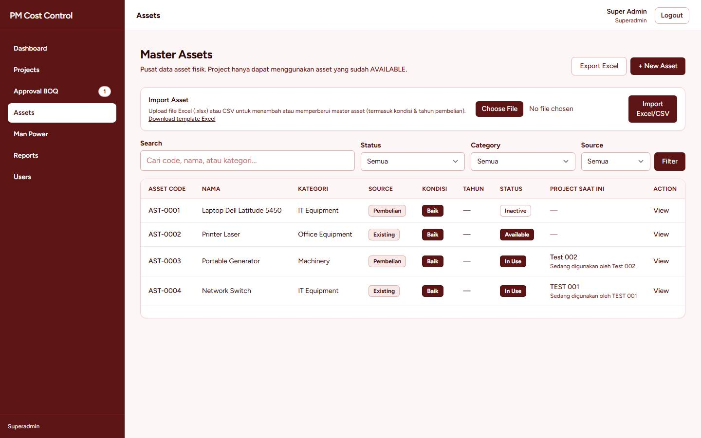
Master asset. Tambah satu per satu, atau lewat Excel.
Melihat: semua peran. Menambah, mengubah, mengimpor, dan menghapus master: Superadmin dan Project Admin.
Menu Assets → + New Asset. Isi kode, nama, kategori, merek, model, satuan, kondisi (Baik, Cukup Baik, Kurang Baik, Rusak), dan tahun pembelian.
Sumber Existing untuk barang yang sudah ada. Sumber Pembelian membutuhkan nomor, tanggal, dan uraian permintaan. Surat permintaan dapat diunduh dari halaman asset.
Asset pembelian berstatus Requested sampai ditandai tersedia. Hanya asset Available yang dapat ditugaskan ke project.
Impor: unduh template Excel, isi, lalu unggah lewat Import Excel/CSV. Kode yang sudah ada diperbarui (termasuk kondisi dan tahun). Kode baru ditambahkan. Export Excel mengunduh seluruh master. CSV dengan pemisah titik koma juga diterima. File .xls lama perlu disimpan ulang sebagai .xlsx.
Memakai asset di project
Menugaskan, mengubah penanggung jawab, dan mengembalikan: Superadmin dan Project Admin. Project harus ACTIVE.
Tab Assets pada project → pilih asset yang Available.
Isi penanggung jawab: nama dan jabatan. Simpan. Status asset menjadi In Use, dan muncul di project ini.
Selama masih dipakai, nama dan jabatan penanggung jawab dapat diubah.
Saat dikembalikan, lepas asset dari project. Status kembali Available dan riwayat pemakaian tetap tercatat di halaman asset.
13. Man Power
Master man power adalah daftar tenaga kerja: kode (otomatis MP-001, MP-002, …), nama, posisi, upah harian, telepon, dan status aktif. Upah di master adalah nilai bawaan; di project boleh diubah.
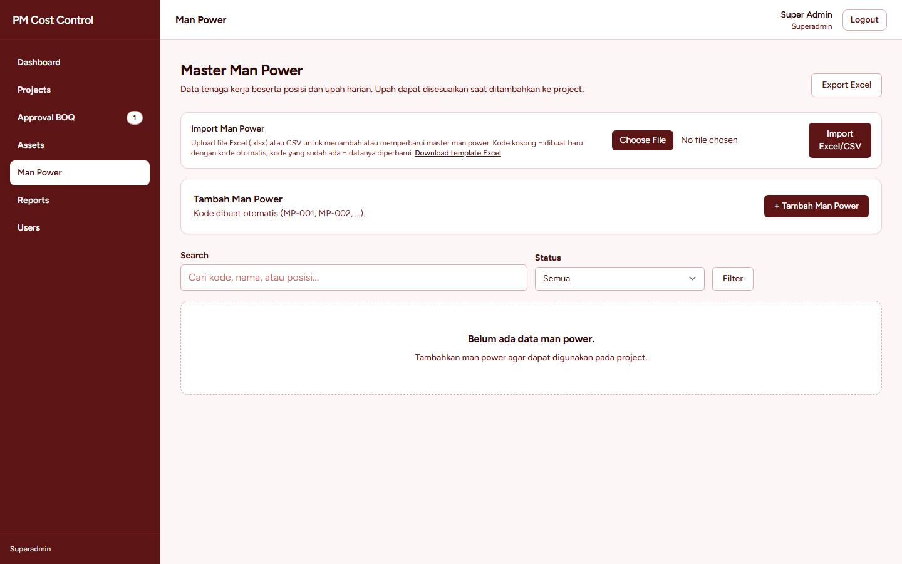
Master man power, termasuk impor Excel.
Melihat master dan tab project: semua peran kecuali Project / Site. Mengelola master dan menempatkan ke project: Superadmin dan Project Admin. Mencatat kasbon dan pelunasan: Superadmin, Project Admin, dan Finance.
Impor master
Unduh template Excel.
Kosongkan kode untuk tenaga baru (kode diisi aplikasi). Isi kode yang sudah ada untuk memperbarui data orang itu.
Upah boleh ditulis 150000, 150.000, atau Rp 150.000. Nomor telepon tetap teks, jadi nol di depan tidak hilang.
Unggah file. Jika ada baris yang salah, seluruh file dibatalkan dan tidak ada yang tersimpan.
Di dalam project
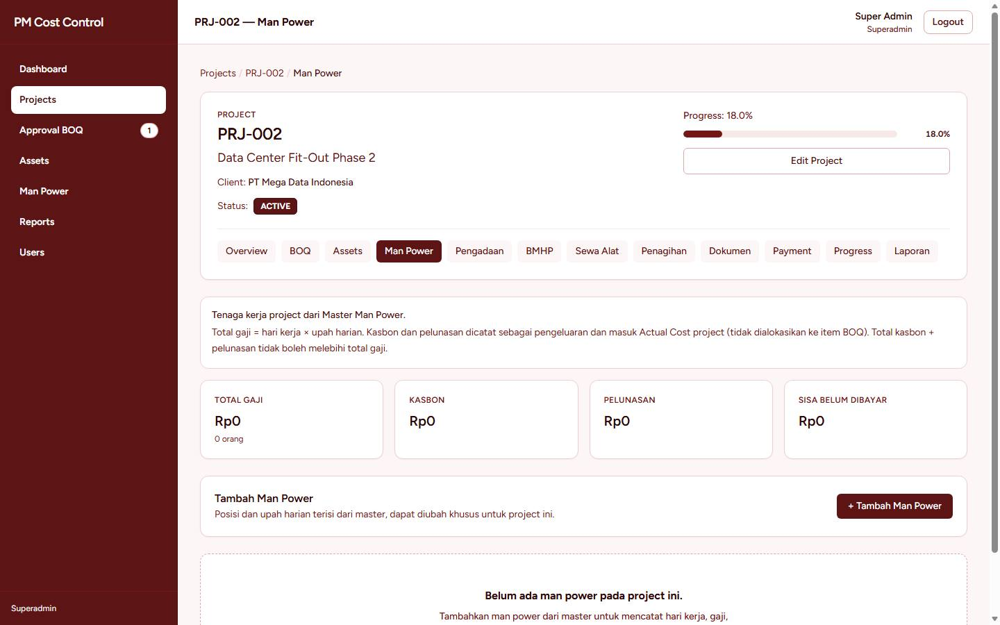
Tab Man Power: hari kerja, total upah, dan saldo kasbon.
Project harus ACTIVE. Tab Man Power → pilih tenaga → sesuaikan posisi dan upah harian bila perlu → isi jumlah hari (bilangan bulat). Total = hari × upah harian.
Catat Kasbon atau Pelunasan. Nilainya tidak boleh melebihi sisa upah yang belum dibayar. Uang yang sudah dibayar ini masuk ke biaya aktual project.
Upah tidak dapat diturunkan sampai di bawah jumlah yang sudah dibayarkan.
Transaksi yang salah tidak dihapus. Batalkan dan isi alasannya. Status menjadi Dibatalkan.
Pada project COMPLETED, tenaga baru tidak dapat ditambahkan, tetapi kasbon dan pelunasan tenaga yang sudah ada masih dapat dicatat.
14. Laporan
Laporan satu project
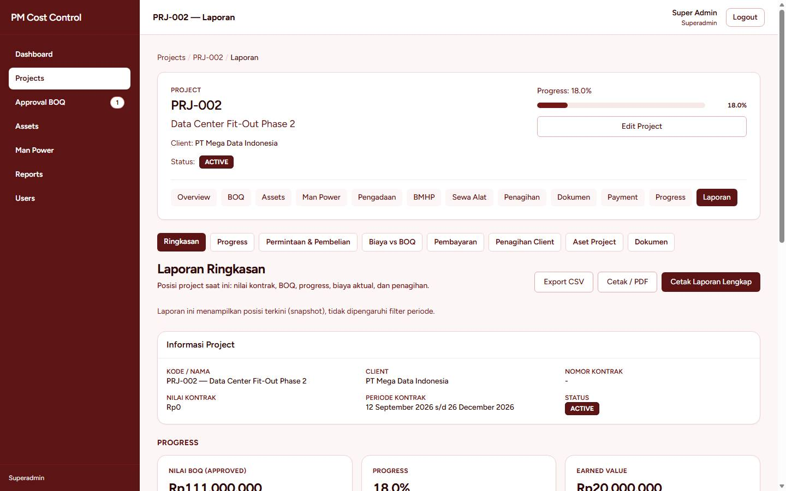
Tab Laporan. Pilih bagian, lalu cetak atau unduh.
Tab Laporan punya bagian: Ringkasan, Progress, Permintaan & Pembelian, Biaya vs BOQ, Pembayaran, Penagihan Client, Aset Project, dan Dokumen. Biaya aktual dibanding anggaran BOQ per item, dan mencakup man power. Gunakan cetak untuk kertas, atau unduh berkas untuk diolah di luar aplikasi.
Laporan seluruh aplikasi
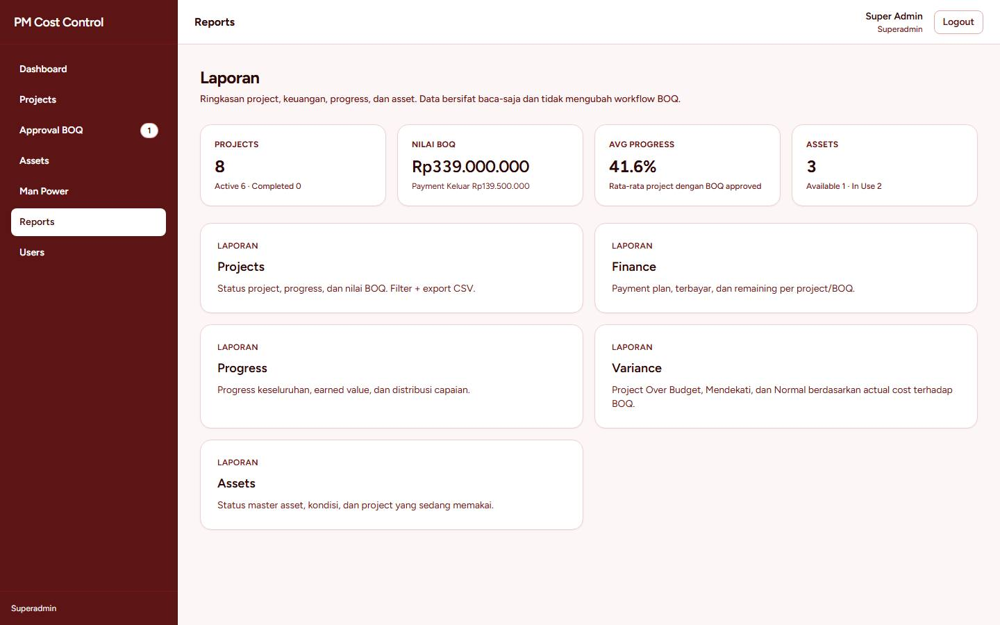
Menu Reports: project, keuangan, progress, asset, dan variance.
Menu Reports merangkum semua project: daftar project, keuangan, progress, asset, dan variance. Variance membandingkan biaya aktual dengan nilai BOQ:
Normal — aktual masih di bawah ambang peringatan.
Mendekati — aktual sudah mendekati nilai BOQ.
Over Budget — aktual melewati nilai BOQ.
Tiap laporan dapat diunduh sebagai CSV lewat tombol ekspor di halaman itu.
15. Pengguna
Hanya Superadmin. Menu Users menampilkan setiap akun dan perannya.
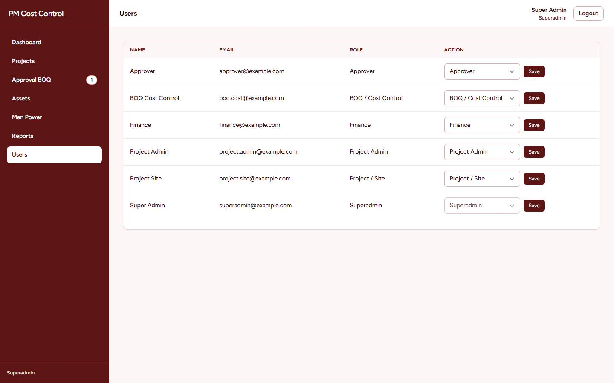
Ganti peran lewat daftar di kolom Role, lalu simpan.
Pastikan orang tersebut sudah punya akun (email terdaftar).
Pada barisnya, pilih peran: Superadmin, Project Admin, BOQ / Cost Control, Approver, Finance, atau Project / Site.
Simpan. Hak akses berubah pada kunjungan berikutnya orang itu. Satu akun punya satu peran.
Pengguna mengganti kata sandinya sendiri lewat profil. Superadmin yang lupa kata sandi satu-satunya akun admin perlu pemulihan lewat email Lupa password?.
16. Panduan per peran
Setiap bagian di bawah adalah urutan kerja harian peran itu. Langkah kliknya ada di bab yang disebut.
Superadmin
Anda melihat semua menu, termasuk Users, dan dapat melakukan semua langkah dalam buku ini.
Buat pengguna dan tentukan perannya (bab 15) sebelum orang lain mulai bekerja.
Buat project, isi nilai kontrak, lalu Activate Project (bab 4).
Awasi kotak Next Action dan angka pada Approval BOQ.
Cadangkan project lewat Export Project sebelum perubahan besar. Impor hanya dipakai untuk memindahkan atau memulihkan data.
Hapus project hanya jika memang tidak terpakai. Ketik kodenya untuk konfirmasi. Tindakan ini tidak untuk memperbaiki salah input kecil.
Project Admin
Anda mengurus project dari pembuatan sampai penagihan diajukan, kecuali persetujuan BOQ dan pencairan uang.
Anda kerjakan: buat dan ubah project, aktifkan project, susun dan ajukan BOQ, perbaiki revisi, tempatkan asset plus penanggung jawab, kelola master asset dan man power, tempatkan tenaga, catat kasbon dan pelunasan, buat pengadaan, susun termin, buat dan submit penagihan, kelola dokumen.
Anda tidak kerjakan: menyetujui BOQ (itu Approver), membuat rencana payment dan mencairkannya (itu Finance), mengirim penagihan dan mencatat uang klien masuk (itu Finance), mengatur pengguna, mengekspor atau menghapus project.
Urutan yang paling sering: aktifkan project → susun BOQ (bab 5) → submit → setelah APPROVED, tempatkan asset dan man power → ajukan pengadaan bila perlu → buat termin saat nilai kontrak sudah ada.
BOQ / Cost Control
Fokus Anda adalah angka BOQ dan pembandingannya dengan biaya.
Anda kerjakan: membuat, mengubah, dan mengajukan BOQ; memperbaiki item saat status REVISION REQUIRED; mengalokasikan pengadaan ke item BOQ; membaca payment, progress, asset, penagihan, dokumen, man power, dan laporan.
Anda tidak kerjakan: membuat project, menyetujui BOQ, mencairkan payment, mengirim tagihan, mengubah progress, menambah asset atau tenaga, mencatat kasbon.
Urutan yang paling sering: buka tab BOQ → susun atau impor Excel (bab 5) → Submit BOQ → jika kembali REVISION REQUIRED, perbaiki lalu Submit BOQ Again → bandingkan biaya di tab Laporan, bagian Biaya vs BOQ, dan di menu Reports bagian variance.
Approver
Anda memutuskan, bukan menyusun.
Anda kerjakan: meninjau dan menyetujui BOQ, atau meminta revisi dengan catatan; menyetujui permintaan pengadaan; melihat penagihan, pembayaran klien, dan mengunduh dokumen.
Anda tidak kerjakan: mengubah isi BOQ, membuat project, membayar, mengubah progress, mengirim tagihan, menambah tenaga atau asset.
Urutan yang paling sering: lihat angka di menu Approval BOQ (bab 6) → Review & Approve → setujui, atau tulis revisi yang spesifik (item dan alasannya) supaya penyusun tahu apa yang harus diubah. Lakukan hal yang sama untuk pengadaan yang berstatus Diajukan.
Finance
Anda mengurus uang keluar dan uang masuk.
Anda kerjakan: rencana payment dan pencairannya, pembayaran serta pembatalan pengadaan, termin, penagihan (buat, submit, kirim, batalkan), pembayaran klien, dokumen, kasbon dan pelunasan man power, semua laporan.
Anda tidak kerjakan: membuat project atau BOQ, menyetujui BOQ, mengubah progress, menambah tenaga ke master atau ke project, mengubah master asset, mengatur pengguna.
Urutan yang paling sering: setelah BOQ APPROVED, buat rencana di tab Payment (bab 7) → cairkan saat jatuh tempo dan simpan bukti → bayar pengadaan yang sudah Disetujui → kirim penagihan yang sudah Ready (bab 10) → catat uang yang diterima. Batalkan dengan alasan jika ada salah catat; jangan menghapus.
Project / Site
Anda bekerja di lapangan: progress dan permintaan barang.
Menu Anda: Dashboard, Projects, Assets (lihat), dan Reports. Tidak ada Man Power, Users, atau Approval BOQ.
Tab yang tidak ada: Man Power, Penagihan, dan Dokumen.
Anda kerjakan: memperbarui progress item (bab 8), membuat dan mengajukan permintaan BMHP, aset, atau sewa, serta mengalokasikannya ke item BOQ (bab 9).
Anda tidak kerjakan: mengubah BOQ, menyetujui, membayar, menagih klien, menempatkan asset, atau mencatat upah.
Urutan yang paling sering: buka project → Progress → isi persen item yang dikerjakan hari itu. Jika bahan atau alat kurang, buat permintaan di tab Pengadaan dan ajukan, supaya Approver dan Finance dapat menindaklanjuti.
17. Arti status
Bagian
Status yang akan Anda lihat
Project
DRAFT → ACTIVE. COMPLETED adalah project yang sudah selesai: tenaga baru tidak ditambahkan, pembayaran tenaga yang ada masih bisa dicatat.
BOQ
DRAFT → WAITING APPROVAL → APPROVED. REVISION REQUIRED berarti harus diperbaiki lalu diajukan lagi.
Not Ready → Ready → Partially Billed → Fully Billed, lalu Partially Paid → Paid.
Penagihan
Draft → Submitted → Sent → Partially Paid → Paid. Cancelled jika dibatalkan. Yang dihitung tertagih adalah yang sudah Sent.
Dokumen
Draft → Submitted → Under Review → Approved. Revision Required lalu Resubmitted jika harus diperbaiki. Cancelled jika tidak dipakai.
Asset
Requested → Available → In Use. Inactive jika tidak dipakai. Kondisi: Baik, Cukup Baik, Kurang Baik, Rusak.
Kasbon / pelunasan
Dibayar, atau Dibatalkan beserta alasannya.
Variance
Normal, Mendekati, Over Budget.
18. Hal yang sering ditanyakan
Tombol yang dijelaskan di buku ini tidak ada di layar saya.
Peran Anda tidak memiliki langkah itu. Lihat bab 16. Jika seharusnya Anda memilikinya, minta Superadmin memeriksa peran di menu Users.
Impor Excel ditolak.
Pakai file .xlsx atau CSV, bukan .xls. Jangan mengubah nama kolom di baris pertama. Untuk BOQ, kolom kode item tidak ada di template dan tidak perlu ditambahkan. Jika satu baris salah, baca pesan “Baris N” dan perbaiki baris itu; untuk man power, tidak ada data yang tersimpan sampai seluruh file benar.
Kode item atau kode tenaga tidak bisa diketik.
Memang dibuat otomatis. Di BOQ, setiap COGS punya urutan ITEM-001 sendiri. Di man power, kode baru adalah MP-00n berikutnya. Isi kode hanya saat Anda memang ingin memperbarui data yang sudah ada.
Progress tidak bisa disimpan.
BOQ item itu harus sudah APPROVED, dan hanya Project / Site serta Superadmin yang dapat menyimpan. Payment belum lunas tidak menghalangi progress.
Termin atau penagihan tidak bisa dibuat.
Isi nilai kontrak lewat Edit Project. Total termin tidak boleh melebihi nilai kontrak, dan termin harus Ready.
Angka di Penagihan tidak mengubah BOQ.
Benar. Penagihan adalah tagihan ke klien. Biaya project ada di Payment, pengadaan, dan man power, lalu dibandingkan di laporan Biaya vs BOQ.
Salah mencatat pembayaran atau kasbon.
Batalkan transaksi itu dan isi alasan. Jangan meminta data dihapus: riwayat tetap diperlukan untuk laporan.
Kontrak hampir habis.
Dashboard menampilkan kartu Peringatan Kontrak, dengan tanda “Lewat” atau “Sisa … hari”. Buka project tersebut dan sesuaikan target selesai bila tanggalnya berubah.
Akhir buku panduan. Pertanyaan yang tidak terjawab di sini dapat ditanyakan kepada Superadmin aplikasi.